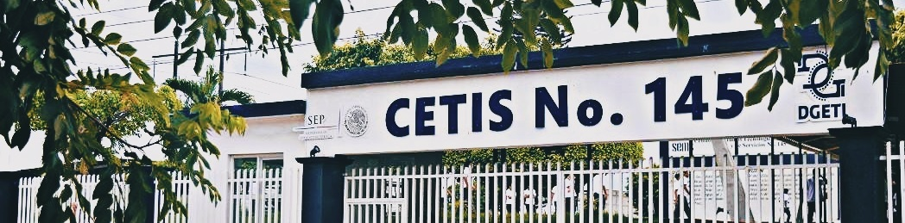

Centro de Estudios Tecnológicos Industrial y de Servicios No. 145
¿Quiénes somos?
El Centro de Estudios Tecnológico tiene como objetivo fomentar una educación integral, contribuyendo a la articulación y flexibilidad del sistema educativo, acorde con los intereses de los estudiantes y las necesidades de desarrollo del país, la Secretaria de Educación Publica a través de la Subsecretaria de Educación e Investigación Tecnológicas, con pleno respeto al federalismo educativo.